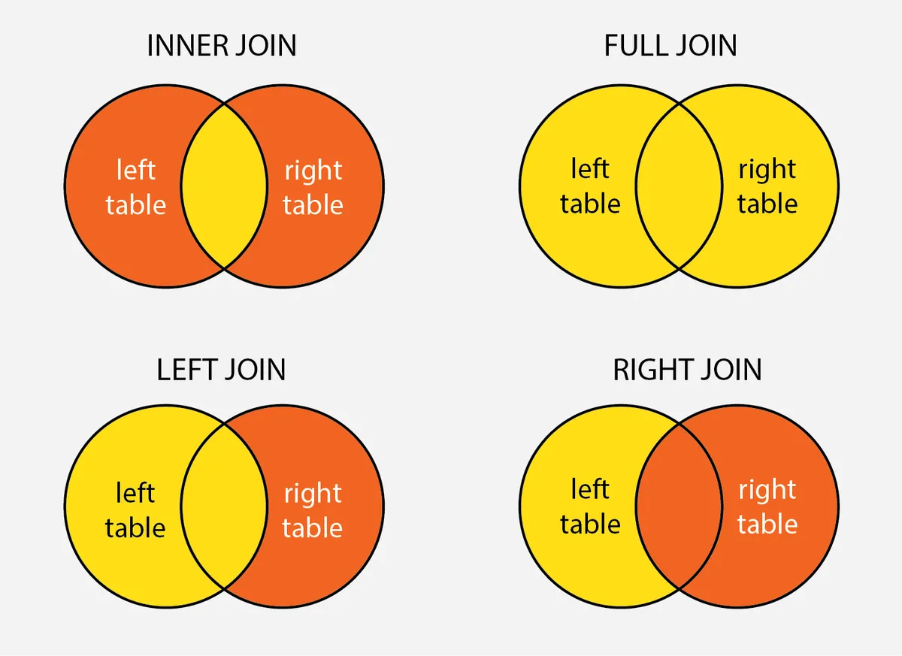

semana_1 <- read.csv("../data/Chapter_5/Restaurant - Week 1 Sales.csv")
head(semana_1) Customer.ID Food.ID
1 537 9
2 97 4
3 658 1
4 202 2
5 155 9
6 213 8En muchas ocasiones debemos trabajar con varias tablas de forma simultánea, y en otras debemos unificarlas para llegar a la tabla final con la que haremos el análisis. Para hacer estas uniones, debemos ya sea combinar las tablas, o anexarlas.
Anexar dos tablas implica “poner una encima de la otra”, es decir, que las filas de una de las tablas se unan a la otra. Para alcanzar esto debemos tener dos dataframes con estructura similar, es decir que tengan la misma cantidad de variables y que éstas tengan encabezados similares.
Para ejemplificar estos casos vamos a trabajar con una serie de tablas ficticias, que responden a los datos de un restaurant imaginario. Lo primero que importaremos son las tablas de ventas de la semana uno y la semana dos.
semana_1 <- read.csv("../data/Chapter_5/Restaurant - Week 1 Sales.csv")
head(semana_1) Customer.ID Food.ID
1 537 9
2 97 4
3 658 1
4 202 2
5 155 9
6 213 8semana_2 <- read.csv("../data/Chapter_5/Restaurant - Week 2 Sales.csv")
head(semana_2) Customer.ID Food.ID
1 688 10
2 813 7
3 495 10
4 189 5
5 267 3
6 310 5Tal como puede apreciarse, ambos dataframes tienen dos columnas que corresponden una al id de la comida y otra al id del cliente. Dado que estos dataframes comparten la misma estructura, es posible unirlos. Para hacerlo podemos usar la función rbind.
ventas <- rbind(semana_1, semana_2)
head(ventas) Customer.ID Food.ID
1 537 9
2 97 4
3 658 1
4 202 2
5 155 9
6 213 8De esta forma, obtenemos un dataframe de 500 filas y la misma cantidad de columnas.
Otra clásica necesidad que se presenta a la hora de trabajar con muchas tablas es el tener que combinarlas. Las combinaciones suceden mediante reglas de unión: a través de una determinada clave, cuando estas coinciden entre dos tablas, se pegan las columnas. Los tipos de unión son los siguientes:

INNER JOIN: solo quedan las filas que tengan la clave en ambos dataset.
FULL JOIN: quedan todas las filas, sin importar si matchean o no
LEFT JOIN: las filas de la tabla de la izquierda quedan todas, se agregan las que coincidan de la derecha.
RIGHT JOIN: las filas de la tabla de la derecha quedan todas, se agregan las que coincidan de la izquierda.
Tidyverse tiene funciones específicas para realizar estas uniones. Comencemos importando las tablas a combinar. La tabla de comidas tiene información sobre el id de cada comida del menú, junto con el nombre del item y su precio.
comida <- read.csv("../data/Chapter_5/Restaurant - Foods.csv")
head(comida) Food.ID Food.Item Price
1 1 Sushi 3.99
2 2 Burrito 9.99
3 3 Taco 2.99
4 4 Quesadilla 4.25
5 5 Pizza 2.49
6 6 Pasta 13.99El objetivo será combinar esta tabla con la de ventas para tener la descripción y el precio de cada item en la tabla principal. La variable que unirá ambas tablas será Food.ID
library(tidyverse)
union <- ventas %>% inner_join(comida, by = "Food.ID")
head(union) Customer.ID Food.ID Food.Item Price
1 537 9 Donut 0.99
2 97 4 Quesadilla 4.25
3 658 1 Sushi 3.99
4 202 2 Burrito 9.99
5 155 9 Donut 0.99
6 213 8 Salad 11.25Para cada Food.ID, la unión trajo el resto de las columnas de la tabla de comida que coincidiera. Para el caso de los clientes tenemos un problema, y es que la columna por la cual se hará la unión no es similar en ambas tablas. Mientras que en ventas la variable se llama Costumer.ID, en clientes se llama ID. Por tanto, tengo que adaptar mi función de combinación, aclarando cómo se llama cada variable en cada tabla.
clientes <- read.csv("../data/Chapter_5/Restaurant - Customers.csv")
head(clientes) ID First.Name Last.Name Gender Company Occupation
1 1 Joseph Perkins Male Dynazzy Community Outreach Specialist
2 2 Jennifer Alvarez Female DabZ Senior Quality Engineer
3 3 Roger Black Male Tagfeed Account Executive
4 4 Steven Evans Male Fatz Registered Nurse
5 5 Judy Morrison Female Demivee Legal Assistant
6 6 Amanda Howell Female Thoughtbridge Dental HygienistUna opción es modificar el nombre de la columna en una de las dos tablas. De otra forma, puede hacerse así:
union <- union %>% inner_join(clientes, by = c("Customer.ID" = "ID"))
head(union) Customer.ID Food.ID Food.Item Price First.Name Last.Name Gender Company
1 537 9 Donut 0.99 Cheryl Carroll Female Zoombeat
2 97 4 Quesadilla 4.25 Amanda Watkins Female Ozu
3 658 1 Sushi 3.99 Patrick Webb Male Browsebug
4 202 2 Burrito 9.99 Louis Campbell Male Rhynoodle
5 155 9 Donut 0.99 Carolyn Diaz Female Gigazoom
6 213 8 Salad 11.25 Keith Foster Male Gigashots
Occupation
1 Registered Nurse
2 Account Coordinator
3 Community Outreach Specialist
4 Account Representative III
5 Database Administrator III
6 VP Quality ControlDe esta forma, obtenemos la tabla final, en donde pueden realizar análisis.
Obtenga las cinco comidas que más se consumen.
Indique qué cliente ha gastado más en el restaurant.
¿Cuánto ha sido el gasto promedio por sexo?
cinco_comidas <- union %>%
group_by(Food.Item) %>%
summarise(cantidad = n()) %>%
arrange(desc(cantidad)) %>%
head(5)
cliente_mas_gastador <- union %>%
group_by(Customer.ID, First.Name, Last.Name) %>%
summarise(gasto = sum(Price)) %>%
arrange(desc(gasto)) %>%
head(1)
gasto_por_sexo <- union %>%
group_by(Gender) %>%
summarise(gasto_promedio = mean(Price))Los datos faltantes son una realidad cotidiana dentro del análisis de datos. Toda estructura de información está sujeta a fallas y esto es complementado por la posible carencia de datos provenientes del provedor.
Estos missing pueden aparecer de varias formas: celdas vacías, textos vacíos, o elementos que identifiquen que un dato es faltante, por ejemplo, un texto que diga “sin dato”.
datos <- read.csv("../data/Chapter_5/data_c_1.csv", encoding = "UTF-8")
head(datos) id date product revenue city product_type
1 1 26/3/2020 Lettuce - Belgian Endive 3139 Laxey premiun
2 2 27/5/2020 Table Cloth 91x91 Colour 4726 Svyetlahorsk regular
3 3 24/6/2020 Pur Source 3117 Cabuyao
4 4 10/7/2020 Syrup - Monin - Blue Curacao 2575 Nouakchott regular
5 5 22/7/2020 Steamers White 3136 Timrat gold
6 6 11/3/2020 Wine - Delicato Merlot 1939 Glinojeck goldAl abrir este dataset, puede observarse con claridad que hay algunos campos que tienen valores faltantes, sin embargo, R no los identifica. Para R hay un valor faltante cuando aparece el elemento NA. Si éste no aparece, el contenido del dato tiene un valor. El problema en este caso es que los campos vacíos R no logra identificarlos como NA, hay que indicárselo.
datos <- read.csv(
file = "../data/Chapter_5/data_c_1.csv",
stringsAsFactors = TRUE,
encoding = "UTF-8",
na.strings = c("", "NA")
)
head(datos) id date product revenue city product_type
1 1 26/3/2020 Lettuce - Belgian Endive 3139 Laxey premiun
2 2 27/5/2020 Table Cloth 91x91 Colour 4726 Svyetlahorsk regular
3 3 24/6/2020 Pur Source 3117 Cabuyao <NA>
4 4 10/7/2020 Syrup - Monin - Blue Curacao 2575 Nouakchott regular
5 5 22/7/2020 Steamers White 3136 Timrat gold
6 6 11/3/2020 Wine - Delicato Merlot 1939 Glinojeck goldComo puede apreciarse, se agrega un parámetro denominado na.strings como forma de indicarle a R cuando un valor de caracter debe tomarse como NA. Además, se ha agregado un parámetro que le pide a R que los valores de texto los almacene como factores. Esto lo hacemos especialmente en este caso, para realizar un conteo de NAs mediante la función summary.
summary(datos) id date product
Min. : 1.0 4/11/2020: 9 Danishes - Mini Raspberry: 5
1st Qu.: 250.8 13/1/2021: 8 Cake - Bande Of Fruit : 4
Median : 500.5 15/2/2020: 8 Beef - Tongue, Cooked : 3
Mean : 500.5 19/7/2020: 7 Beer - Upper Canada Lager: 3
3rd Qu.: 750.2 29/5/2020: 7 Bouillion - Fish : 3
Max. :1000.0 (Other) :942 (Other) :933
NA's : 19 NA's : 49
revenue city product_type
Min. :1001 Guadalupe : 3 gold :302
1st Qu.:2049 København : 3 premiun:325
Median :3073 Buenavista: 2 regular:321
Mean :3058 Cabrobó : 2 NA's : 52
3rd Qu.:4108 Córdoba : 2
Max. :4999 (Other) :965
NA's :23 NA's : 23 De esta forma, el summary toma los NA como otro valor dentro de las variables, y realiza un conteo. Otra forma de obtener esta información es mediante la función skim. Esta función está pensada para realizar una serie de averiguaciones en una tabla y devolver un diagnóstico de los datos muy completo. Para usarla hay que llamar al paquete skimr
library(skimr)
skim(datos)| Name | datos |
| Number of rows | 1000 |
| Number of columns | 6 |
| _______________________ | |
| Column type frequency: | |
| factor | 4 |
| numeric | 2 |
| ________________________ | |
| Group variables | None |
Variable type: factor
| skim_variable | n_missing | complete_rate | ordered | n_unique | top_counts |
|---|---|---|---|---|---|
| date | 19 | 0.98 | FALSE | 341 | 4/1: 9, 13/: 8, 15/: 8, 19/: 7 |
| product | 49 | 0.95 | FALSE | 786 | Dan: 5, Cak: 4, Bee: 3, Bee: 3 |
| city | 23 | 0.98 | FALSE | 954 | Gua: 3, Køb: 3, Bue: 2, Cab: 2 |
| product_type | 52 | 0.95 | FALSE | 3 | pre: 325, reg: 321, gol: 302 |
Variable type: numeric
| skim_variable | n_missing | complete_rate | mean | sd | p0 | p25 | p50 | p75 | p100 | hist |
|---|---|---|---|---|---|---|---|---|---|---|
| id | 0 | 1.00 | 500.50 | 288.82 | 1 | 250.75 | 500.5 | 750.25 | 1000 | ▇▇▇▇▇ |
| revenue | 23 | 0.98 | 3058.06 | 1185.29 | 1001 | 2049.00 | 3073.0 | 4108.00 | 4999 | ▇▆▆▇▇ |
Luego de identificar los valores faltantes de nuestro dataframe, la decisión siguiente a tomar es qué hacer con ellos.
Hay varias posibilidades:
La media, mediana, o algún valor estadístico
Por ceros
El valor más frecuente
Otro valor (por ejemplo: “Otro”)
Si decidimos eliminar los valores faltantes, podemos usar la función drop_na, del paquete tidyverse, que elimina la fila entera en donde encuentra un NA.
library(tidyverse)
datos %>% drop_na() %>% head() id date product revenue city product_type
1 1 26/3/2020 Lettuce - Belgian Endive 3139 Laxey premiun
2 2 27/5/2020 Table Cloth 91x91 Colour 4726 Svyetlahorsk regular
3 4 10/7/2020 Syrup - Monin - Blue Curacao 2575 Nouakchott regular
4 5 22/7/2020 Steamers White 3136 Timrat gold
5 6 11/3/2020 Wine - Delicato Merlot 1939 Glinojeck gold
6 7 1/6/2020 Island Oasis - Magarita Mix 2283 Châteauroux goldEsta función resulta bastante flexible y permite varios tratamientos de NA. Por ejemplo, si quisiéramos eliminar NA de alguinas columnas en particular, podemos aclarárselo.
datos %>% drop_na(any_of(c("date", "product"))) %>% head() id date product revenue city product_type
1 1 26/3/2020 Lettuce - Belgian Endive 3139 Laxey premiun
2 2 27/5/2020 Table Cloth 91x91 Colour 4726 Svyetlahorsk regular
3 3 24/6/2020 Pur Source 3117 Cabuyao <NA>
4 4 10/7/2020 Syrup - Monin - Blue Curacao 2575 Nouakchott regular
5 5 22/7/2020 Steamers White 3136 Timrat gold
6 6 11/3/2020 Wine - Delicato Merlot 1939 Glinojeck goldOtras veces necesitamos no eliminar, sino reemplazar los valores faltantes por un valor que resulte conveniente.
La decisión sobre este procedimiento debe ser acorde al contenido conceptual del dataset y no hay una solución única para todas las ocasiones.
Si queremos generar un reemplazo de NAs por un valor calculado, digamos, la media de esa variable, podemos guardar dicho valor en un objeto y luego imputarlo con la función replace_na. Dicha función debe recibir una lista que indique qué imputar a cada variable. Si queremos hacerlo con una sola, se especifica la variable, sino, se van agregando con comas.
Para ver el impacto de esta técnica, localizaremos un NA en la fila 31 en la variable revenue y veremos cómo se modifica. Para visualizarlo, podemos ver la tabla entera con la función View o vamos directo a esa sección con la función slice.
datos %>% slice(25:35) id date product revenue city
1 25 11/8/2020 <NA> 1723 Gaocang
2 26 5/10/2020 Chocolate Bar - Smarties 1969 Rizal
3 27 6/9/2020 Tea - Decaf 1 Cup 4202 Mrganush
4 28 9/3/2020 Bread - Multigrain, Loaf 1190 Aveiras de Cima
5 29 27/5/2020 Lamb Rack - Ontario 4605 Paihia
6 30 14/3/2020 Chocolate - Mi - Amere Semi 3540 Lañgub
7 31 18/8/2020 Cheese - Gouda Smoked NA <NA>
8 32 2/5/2020 Apple - Granny Smith 4848 Cineumbeuy
9 33 14/5/2020 Chocolate - Liqueur Cups With Foil 1607 Borjomi
10 34 17/3/2020 Chocolate - Feathers 2755 Sisŏphŏn
11 35 23/7/2020 Pie Filling - Pumpkin 1213 Tlogotunggal
product_type
1 gold
2 regular
3 gold
4 premiun
5 gold
6 regular
7 gold
8 premiun
9 gold
10 gold
11 regularmean_revenue <- round(mean(datos$revenue, na.rm = TRUE),0)
datos %>% replace_na(list(revenue = mean_revenue)) %>% slice(25:35) id date product revenue city
1 25 11/8/2020 <NA> 1723 Gaocang
2 26 5/10/2020 Chocolate Bar - Smarties 1969 Rizal
3 27 6/9/2020 Tea - Decaf 1 Cup 4202 Mrganush
4 28 9/3/2020 Bread - Multigrain, Loaf 1190 Aveiras de Cima
5 29 27/5/2020 Lamb Rack - Ontario 4605 Paihia
6 30 14/3/2020 Chocolate - Mi - Amere Semi 3540 Lañgub
7 31 18/8/2020 Cheese - Gouda Smoked 3058 <NA>
8 32 2/5/2020 Apple - Granny Smith 4848 Cineumbeuy
9 33 14/5/2020 Chocolate - Liqueur Cups With Foil 1607 Borjomi
10 34 17/3/2020 Chocolate - Feathers 2755 Sisŏphŏn
11 35 23/7/2020 Pie Filling - Pumpkin 1213 Tlogotunggal
product_type
1 gold
2 regular
3 gold
4 premiun
5 gold
6 regular
7 gold
8 premiun
9 gold
10 gold
11 regularSi quisiéramos reemplazar todos los NAs de los datos numéricos por un 0, realmente específicar este valor para cada variable puede resultar tedioso. Por tanto, podemos usar un método para modificar todas las columnas numéricas de una vez, tal como se explica en los comentarios del siguiente código.
Pasos:
datos %>% # Paso 1
select_if(is.numeric) %>% # Paso 2
replace(is.na(.),0) %>% # Paso 3
cbind(select_if(datos, negate(is.numeric))) %>% # Paso 4
slice(25:35) id revenue date product city
1 25 1723 11/8/2020 <NA> Gaocang
2 26 1969 5/10/2020 Chocolate Bar - Smarties Rizal
3 27 4202 6/9/2020 Tea - Decaf 1 Cup Mrganush
4 28 1190 9/3/2020 Bread - Multigrain, Loaf Aveiras de Cima
5 29 4605 27/5/2020 Lamb Rack - Ontario Paihia
6 30 3540 14/3/2020 Chocolate - Mi - Amere Semi Lañgub
7 31 0 18/8/2020 Cheese - Gouda Smoked <NA>
8 32 4848 2/5/2020 Apple - Granny Smith Cineumbeuy
9 33 1607 14/5/2020 Chocolate - Liqueur Cups With Foil Borjomi
10 34 2755 17/3/2020 Chocolate - Feathers Sisŏphŏn
11 35 1213 23/7/2020 Pie Filling - Pumpkin Tlogotunggal
product_type
1 gold
2 regular
3 gold
4 premiun
5 gold
6 regular
7 gold
8 premiun
9 gold
10 gold
11 regularEsto podemos aplicarlo con las variables categóricas también, por ejemplo, si queremos que los NAs sean “sin dato” o de algún valor que nos interese. Para esto vamos a necesitar un paquete para el tratamiento de valores de factores, llamada forcats. Este paquete tiene una función dedicada expresamente para sustituir los NAs por otro valor, el truco es reemplazar las variable existente con la nueva generada a través de mutate. Si en vez de factores, trabajáramos con caracteres, la función replace debería ser suficiente.
library(forcats)
datos %>%
mutate(
date = fct_explicit_na(date, "1/1/1900"),
product = fct_explicit_na(product, "sinDato"),
city = fct_explicit_na(city, "Otro"),
product_type = fct_explicit_na(product_type, "Otro") ) %>%
head() id date product revenue city product_type
1 1 26/3/2020 Lettuce - Belgian Endive 3139 Laxey premiun
2 2 27/5/2020 Table Cloth 91x91 Colour 4726 Svyetlahorsk regular
3 3 24/6/2020 Pur Source 3117 Cabuyao Otro
4 4 10/7/2020 Syrup - Monin - Blue Curacao 2575 Nouakchott regular
5 5 22/7/2020 Steamers White 3136 Timrat gold
6 6 11/3/2020 Wine - Delicato Merlot 1939 Glinojeck golddatos_sin_na <- datos %>%
select_if(is.numeric) %>% # Paso 2
replace(is.na(.),0) %>% # Paso 3
cbind(select_if(datos, negate(is.numeric))) %>%
mutate(
date = fct_explicit_na(date, "1/1/1900"),
product = fct_explicit_na(product, "sinDato"),
city = fct_explicit_na(city, "Otro"),
product_type = fct_explicit_na(product_type, "Otro")
)
summary(datos_sin_na) id revenue date
Min. : 1.0 Min. : 0 1/1/1900 : 19
1st Qu.: 250.8 1st Qu.:1959 4/11/2020: 9
Median : 500.5 Median :3010 13/1/2021: 8
Mean : 500.5 Mean :2988 15/2/2020: 8
3rd Qu.: 750.2 3rd Qu.:4072 19/7/2020: 7
Max. :1000.0 Max. :4999 29/5/2020: 7
(Other) :942
product city product_type
sinDato : 49 Otro : 23 gold :302
Danishes - Mini Raspberry: 5 Guadalupe : 3 premiun:325
Cake - Bande Of Fruit : 4 København : 3 regular:321
Beef - Tongue, Cooked : 3 Buenavista: 2 Otro : 52
Beer - Upper Canada Lager: 3 Cabrobó : 2
Bouillion - Fish : 3 Córdoba : 2
(Other) :933 (Other) :965 Los duplicados también suelen ser vistos como errores en los datos, pero tal como se aclara en la cita de más arriba, debe tenerse en cuenta el contenido conceptual de cada dataset para dirimir qué hacer con estos casos.
Los duplicados pueden no serlo de forma absoluta, puede ocurrir que haya duplicados parciales, es decir que se encuentren una serie de variables con el mismo elemento pero en otras no. Dependerá de cada caso si se eliminan, agrupan, o dejan tal cual están.
Para quedarnos con los valores únicos de un dataset, debemos usar la función distinct. A esta función se le indica a partir de cuáles variables debe buscar que haya combinaciones únicas. Si no se le presentan argumentos, considera a todas las variables.
datos %>%
nrow(.)[1] 1000datos %>%
distinct() %>%
nrow(.)[1] 1000Ambos resultados dan mil casos, por tanto, se puede concluir que el dataset no tiene duplicados si tomamos en cuenta todas sus variables. Pero si se toman algunas esto empieza a ocurrir.
Como puede apreciarse en los cuadros inferiores, si nos quedamos con menos variables, el distinct nos devuelve la cantidad de combinaciones únicas de éstas. También vemos que el uso del distinct indicándole cuáles variable son de interés, nos hace llegar al mismo objetivo.
datos %>%
select(city, product_type) %>%
nrow(.)[1] 1000datos %>%
select(city, product_type) %>%
distinct() %>%
nrow(.)[1] 969datos %>%
distinct(city, product_type) %>%
nrow(.)[1] 969Por defecto al indicarle cuáles variables nos interesa obtener los valores únicos, el distinct elimina el resto, pero podemos evitar esto si le agregamos el parámetro keep_all. Debe tenerse presente que distinct solo se quedará con el primer registro. Si nuestra intención es que esto sea diferente, debemos ordenar el dataframe de la forma en que elimine los registros que nosotros querramos.
datos %>%
distinct(city, product_type) %>%
head() city product_type
1 Laxey premiun
2 Svyetlahorsk regular
3 Cabuyao <NA>
4 Nouakchott regular
5 Timrat gold
6 Glinojeck golddatos %>%
distinct(city, product_type, .keep_all = TRUE) %>%
head() id date product revenue city product_type
1 1 26/3/2020 Lettuce - Belgian Endive 3139 Laxey premiun
2 2 27/5/2020 Table Cloth 91x91 Colour 4726 Svyetlahorsk regular
3 3 24/6/2020 Pur Source 3117 Cabuyao <NA>
4 4 10/7/2020 Syrup - Monin - Blue Curacao 2575 Nouakchott regular
5 5 22/7/2020 Steamers White 3136 Timrat gold
6 6 11/3/2020 Wine - Delicato Merlot 1939 Glinojeck goldAsí como los factores y los caracteres tienen sus particularidades, suelen dar menos problemas que las fechas, las cuales están condicionadas por formatos. Para manejar este tipo de dato, el paquete más usado se llama lubridate.
Muchas veces R interpreta las fechas como textos en la medida que el formato no es el mismo que el estandarizado (YYYY-MM-DD). Cuando esto ocurre, debemos transformar la variable con, por ejemplo, una función de lubridate que transforma una variable en fecha, asignándole a cada valor de la fecha el del orden de la función.
En este caso usaremos dmy ya que en nuestra variable el formato es DD/MM/YYYY. Si fuera, por ejemplo, MM-DD-AAAA, podríamos usar mdy (no es relevante el simbolo que separe a los elementos de la fecha). Hay también funciones que contienen horas, minutos y segundos.
library(lubridate)
datos %>% str(.)'data.frame': 1000 obs. of 6 variables:
$ id : int 1 2 3 4 5 6 7 8 9 10 ...
$ date : Factor w/ 341 levels "1/1/2021","1/10/2020",..: 210 223 190 21 169 29 9 79 279 142 ...
$ product : Factor w/ 786 levels "Alize Red Passion",..: 360 654 526 648 631 733 328 369 420 358 ...
$ revenue : int 3139 4726 3117 2575 3136 1939 2283 1444 2158 3853 ...
$ city : Factor w/ 954 levels "‘Uzeir","Agbani",..: 445 769 107 554 800 258 141 453 327 525 ...
$ product_type: Factor w/ 3 levels "gold","premiun",..: 2 3 NA 3 1 1 1 2 1 1 ...datos %>%
mutate(date = dmy(date)) %>%
str(.)'data.frame': 1000 obs. of 6 variables:
$ id : int 1 2 3 4 5 6 7 8 9 10 ...
$ date : Date, format: "2020-03-26" "2020-05-27" ...
$ product : Factor w/ 786 levels "Alize Red Passion",..: 360 654 526 648 631 733 328 369 420 358 ...
$ revenue : int 3139 4726 3117 2575 3136 1939 2283 1444 2158 3853 ...
$ city : Factor w/ 954 levels "‘Uzeir","Agbani",..: 445 769 107 554 800 258 141 453 327 525 ...
$ product_type: Factor w/ 3 levels "gold","premiun",..: 2 3 NA 3 1 1 1 2 1 1 ...También podemos generar variables a partir de fechas, por ejemplo podemos obtener el año, mes y día de la semana a partir de una fecha dada. También, podemos imputar una fecha en específico, por ejemplo, la de hoy.
datos %>%
mutate(date = dmy(date)) %>%
mutate(
anio = year(date),
mes = month(date),
dia_semana = wday(date, label = TRUE),
hoy = today()
) %>%
head() id date product revenue city product_type
1 1 2020-03-26 Lettuce - Belgian Endive 3139 Laxey premiun
2 2 2020-05-27 Table Cloth 91x91 Colour 4726 Svyetlahorsk regular
3 3 2020-06-24 Pur Source 3117 Cabuyao <NA>
4 4 2020-07-10 Syrup - Monin - Blue Curacao 2575 Nouakchott regular
5 5 2020-07-22 Steamers White 3136 Timrat gold
6 6 2020-03-11 Wine - Delicato Merlot 1939 Glinojeck gold
anio mes dia_semana hoy
1 2020 3 Thu 2023-08-01
2 2020 5 Wed 2023-08-01
3 2020 6 Wed 2023-08-01
4 2020 7 Fri 2023-08-01
5 2020 7 Wed 2023-08-01
6 2020 3 Wed 2023-08-01Otro valor que traen las fechas es la generación de variables calculadas a partir de fechas. Es muy común querer obtener el tiempo transcurrido entre una fecha y otra. En el siguiente ejemplo se presenta cómo encontrar la diferencia en días, meses y años. Es básicamente la división entre la cantidad de días (unidad de medida de lubridate) por el segmentador que nos interesa. El uso de los % es para que redondee.
datos %>%
select(id, date) %>%
mutate(date = dmy(date), hoy = today()) %>%
mutate(
anios_dif = interval(date, hoy) %/% years(1),
meses_dif = interval(date, hoy) %/% months(1),
dias_dif = interval(date, hoy) %/% days(1),
un_anio_mas = date + years(1),
un_mes_mas = date + months(1),
un_dia_mas = date + 1
) %>%
head() id date hoy anios_dif meses_dif dias_dif un_anio_mas un_mes_mas
1 1 2020-03-26 2023-08-01 3 40 1223 2021-03-26 2020-04-26
2 2 2020-05-27 2023-08-01 3 38 1161 2021-05-27 2020-06-27
3 3 2020-06-24 2023-08-01 3 37 1133 2021-06-24 2020-07-24
4 4 2020-07-10 2023-08-01 3 36 1117 2021-07-10 2020-08-10
5 5 2020-07-22 2023-08-01 3 36 1105 2021-07-22 2020-08-22
6 6 2020-03-11 2023-08-01 3 40 1238 2021-03-11 2020-04-11
un_dia_mas
1 2020-03-27
2 2020-05-28
3 2020-06-25
4 2020-07-11
5 2020-07-23
6 2020-03-12Genere una tabla que muestre el total de productos vendidos, y el total revenue por año y mes. Elimine los casos en donde haya valores faltantes.
¿Cuáles han sido, para cada año, los cinco productos menos vendidos? ¿Y los menos rentables?
Investigue si se vende más caro en la primera mitad del año o en la segunda, averiguando el promedio de venta por unidad. Convierta los valores faltantes del mes en enero.
# Ejercicio 1
datos %>%
mutate(date = dmy(date)) %>%
mutate(anio = year(date), mes = month(date)) %>%
drop_na(any_of(c("anio", "mes"))) %>%
group_by(anio, mes) %>%
summarise(cantidad = n(), total_ingreso = sum(revenue, na.rm = TRUE))
# Ejercico 2
datos %>%
mutate(date = dmy(date)) %>%
mutate(anio = year(date)) %>%
drop_na(any_of(c("anio", "product"))) %>%
group_by(anio, product) %>%
summarise(cantidad = n(), total_ingreso = sum(revenue, na.rm = TRUE)) %>% arrange(cantidad) %>%
head(5)
datos %>%
mutate(date = dmy(date)) %>%
mutate(anio = year(date)) %>%
drop_na(any_of(c("anio", "product"))) %>%
group_by(anio, product) %>%
summarise(cantidad = n(), total_ingreso = sum(revenue, na.rm = TRUE)) %>% arrange(total_ingreso) %>%
head(5)
# Ejercicio 2 parte b
datos %>%
mutate(date = dmy(date)) %>%
mutate(anio = year(date)) %>%
drop_na(any_of(c("anio", "product"))) %>%
group_by(anio, product) %>%
summarise(cantidad = n(), total_ingreso = sum(revenue, na.rm = TRUE)) %>%
arrange(total_ingreso) %>%
head(1) %>%
select(product) %>%
left_join(datos, by = 'product') %>%
mutate(date = dmy(date), hoy = today()) %>%
arrange(desc(date)) %>%
mutate(dias_desde_que_se_vendio = interval(date, hoy) %/% days(1)) %>%
select(product, dias_desde_que_se_vendio) %>%
head()
# Ejercicio 3
datos %>%
mutate(date = dmy(date)) %>%
mutate(mes = month(date)) %>%
replace_na(list(mes = 1)) %>%
mutate(
parte_del_anio = case_when(
mes < 7 ~ "Primera parte",
mes > 6 ~ "Segunda parte"
)
) %>%
group_by(parte_del_anio) %>%
summarise(cantidad = n(), total_ingreso = sum(revenue, na.rm = TRUE)) %>%
mutate(promedio_venta = total_ingreso/cantidad)